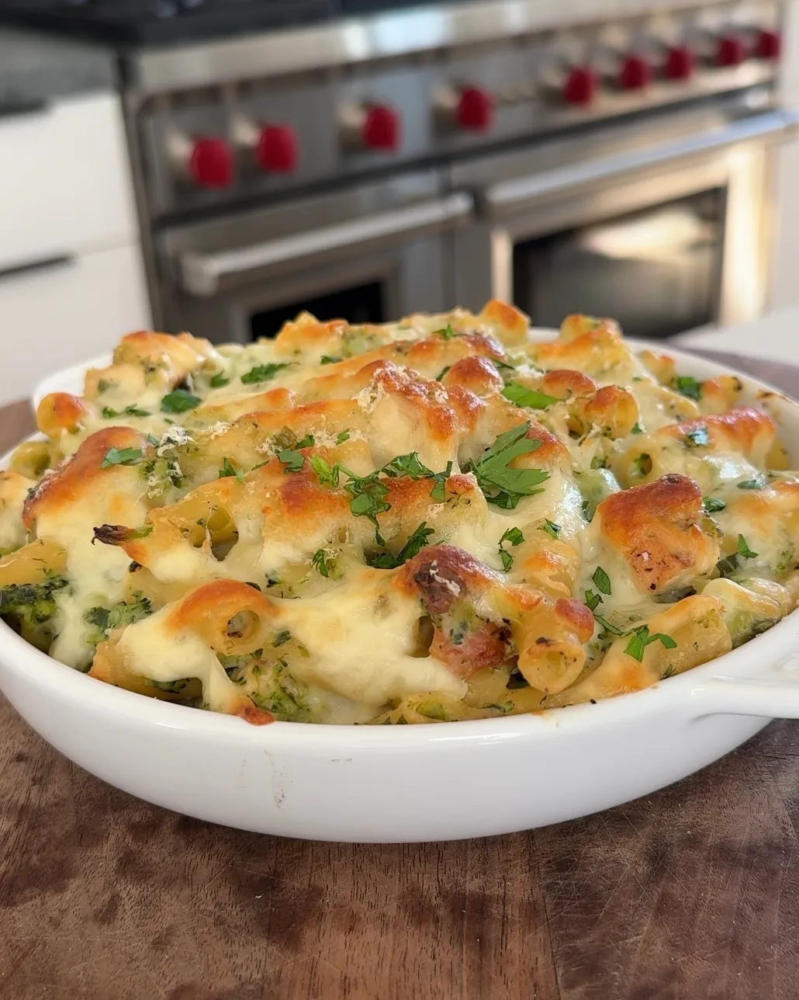

Chicken and Broccoli Baked Ziti

Description
Serves 6-8 people
1 hour prep time + 25 minute cook time
Ingredients
- 2 Chicken Boneless Skinless Chicken Breasts (1-1+1/2 lbs.)
- Salt & Pepper
- 1 Tbsp Oil
- 1 Tbsp Butter
- 16 oz. Ziti Pasta
- 4 Tbsp Butter
- 2 Cloves Garlic, minced
- 4 Cups Broccoli, finely chopped
- 1/4 Cup Flour
- 4 Cups 2% Milk
- 1+1/2 tsp Kosher Salt
- 1/2 tsp Pepper
- 1/2 Cup Grated Parmesan Cheese
- 1+1/2 Cups Grated Mozzarella
Steps
- Preheat your oven to 375F and bring a large pot of salted water to a boil for the pasta
- Pound the chicken breasts until they are ~1/2” thick; season with salt and pepper on both sides
- Preheat a large skillet over medium heat and melt 1 Tbsp of butter with 1 Tbsp olive oil; place the chicken on the skillet and cook until golden brown on both sides and internal temperature reaches 165°F (5-6 mins per side) then remove from the pan; let rest for 5 mins then slice into bite size cubes
- Boil pasta until al dente (1-2 mins less than package directions) then drain and set aside
- In a large pot over medium heat, sauté the garlic in 4 Tbsp butter for 1 min, then add the broccoli and sauté for 2-3 more mins until veggies are heated through and tender
- Stir in the flour and then add the milk 3/4 cups at a time, stirring to incorporate before adding more; once all the milk is added, turn the heat up to medium high until the mixture bubbles and thickens slightly then turn the heat back down to medium and add the parmesan, salt, pepper
- Turn off the heat and stir in the pasta and chicken, then transfer into a greased 9”x13” baking dish (or individual bakers) and top with mozzarella and parmesan
- Bake uncovered for 20-25 mins until the top is deep golden brown in spots and enjoy!